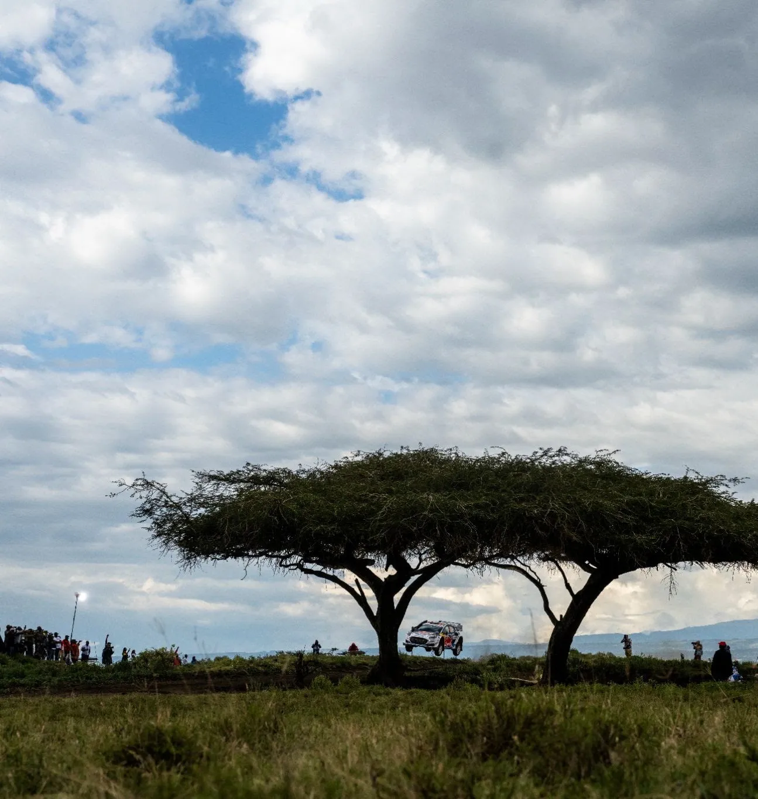
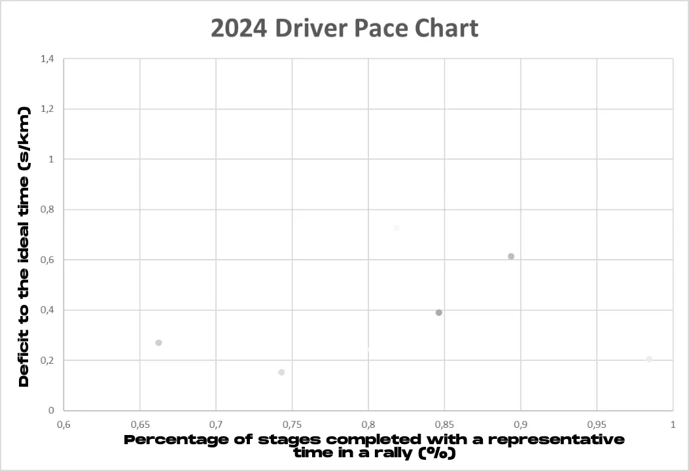
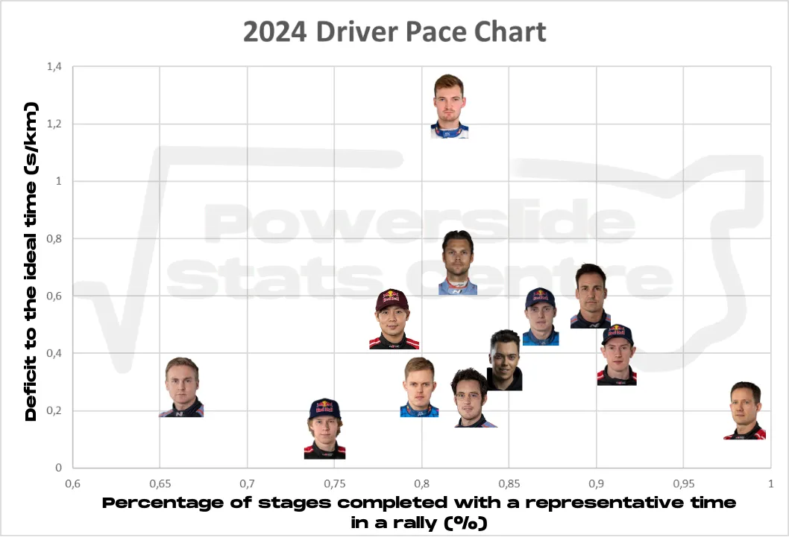
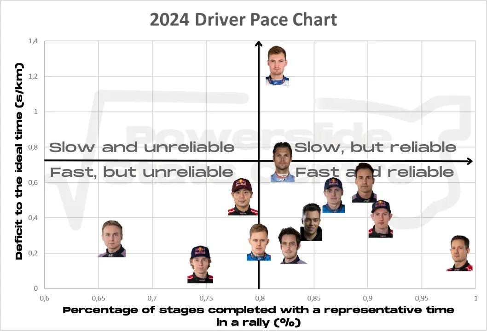
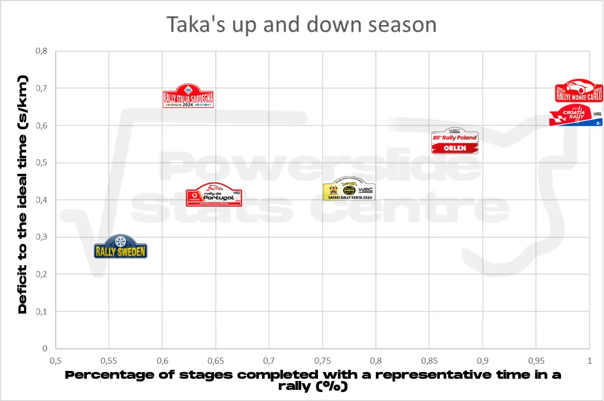
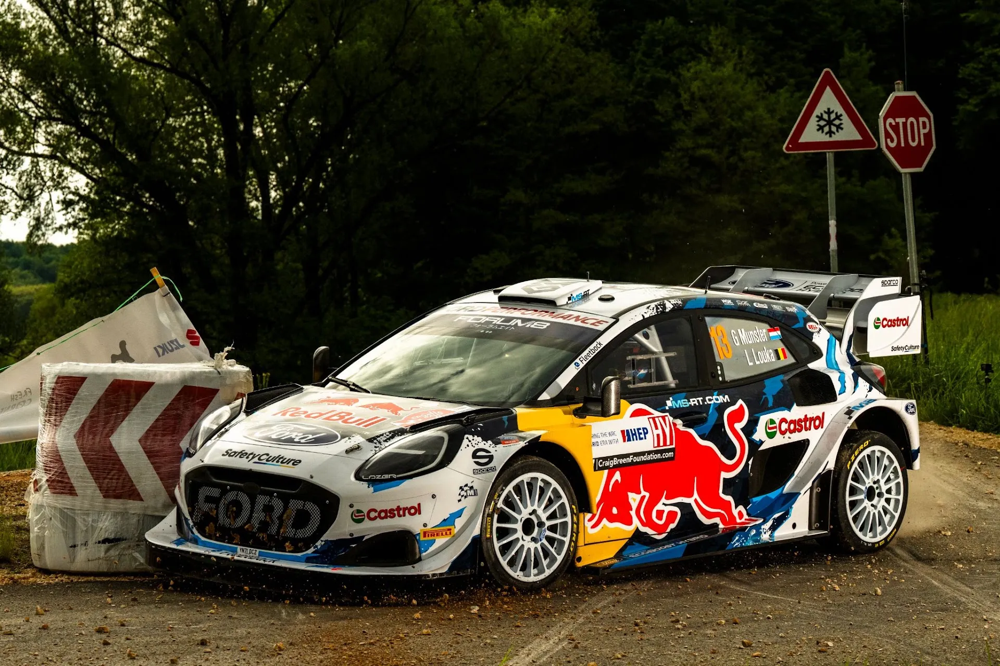
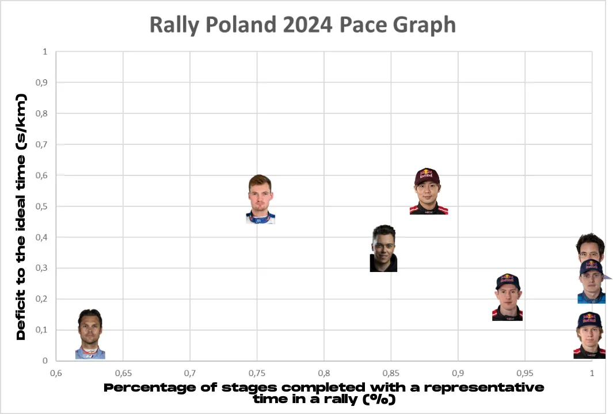
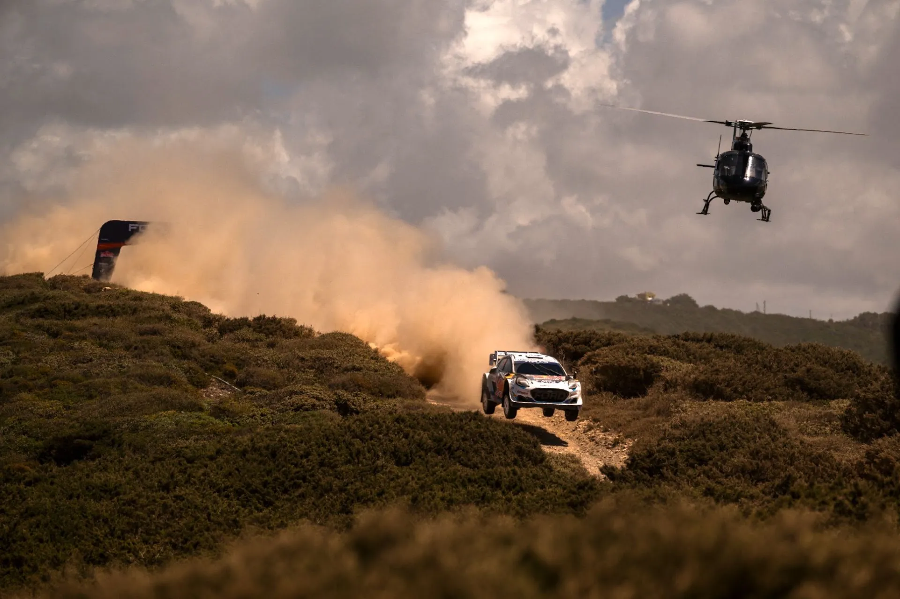
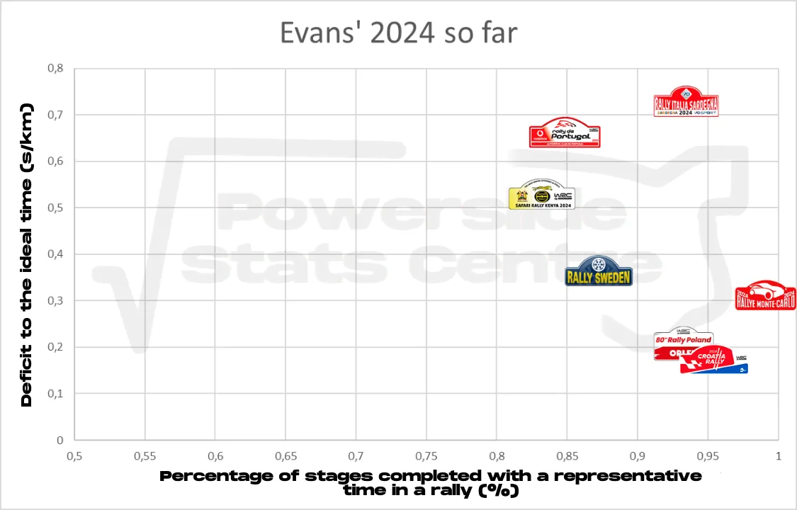

Powerslide Stats Centre: WRC 2024 mid-season review
We are at the mid-point of the 2024 WRC season. We have a three-way title fight on our hands for the drivers' championship, and a thrilling battle between Hyundai and Toyota for the Constructors. It is very common for people to look at the standings and assume what's happened throughout the season. That is something I detaste, because the standings are just results, they leave out what's happened in the actual rally. The phrase "The stopwatch doesn't lie" is something that annoys me. However, advanced stats on the other hand, they never lie.
So just like last year, we'll take a deep dive in the 2024 season, without just looking at the results, and this time, there will be advanced stats that no one else has ever used in the WRC before! Just like last year I have analysed the pace from all the drivers this season, excluding stages were punctures/spins/crashes or mechanical issues made an appearance. The seconds per kilometre (s/km) deficit is to the "ideal pace". The ideal pace is essentially the pace someone would have if they won all the stages in a rally. Every driver will be placed in the chart below, and their position in the chart will depend on their speed, and consistency.

The higher a driver is on the Y axis, the slower he is on average, and the more right he is on the X axis, the more consistent he is. So, are you ready? Here we go!

I know this seems like it's a lot to take in, but this next one is going to make everything simpler!

See that's better now! We have split the graph into four parts, Slow and Unreliable, Slow but Reliable, Fast but Unreliable and Fast and Reliable.
Our WRC field this year is so good, that no driver finds themselves in the Slow and Unreliable quartile. In fact no one is even close to it! However, we do have some unreliable drivers. As a disclaimer, Esapekka Lappi finds himself in the Fast but Unreliable quartile, mostly because of his lack of entries so far this year. The Finn was cruising after Day 2 in Sweden, and was hampered by mechanical issues in Safari. Fellow Finn and last year's champion Kalle Rovanperä, may be the fastest driver on the field this year based on our data, but he is also been quite unreliable! The Finn's 2024 season has had ups and downs, with the Toyota driver either winning, or crashing out of events. Teammate Takamoto Katsuta finds himself in a familiar position. The Japanese driver is considerably slower than his teammate, but matching two of Hyundai's part timers, however he has been a lot more unreliable. Taka crashed out in Sweden and Portugal, and retired due to mechanical problems in Sardegna. His tendency to struggle in rallies he hasn't competed in before was verified in Poland, where he was the slowest out of the Rally1 cars, even slower than Gregoire Munster.

As you can see from this graph, Taka is either fast but inconsistent, or slow but consistent. One does wonder when he will be able to get closer to his teammates. This is his 5th season in the top class.
On the Slow but reliable quartile, Gregoire Munster's name stands out from the rest. The Luxembourger is the only driver this season to have an average pace of more than a second per kilometre, which is really the "cut off" if you want to be considered a driver worth the time of an onboard camera in the broadcast. I will say this though, Munster improved massively in Poland, where he beat Katsuta on pace, and was way closer to his teammates. Please more of this for the second half Gregoire!

Jaanus Ree / Red Bull Content Pool
At the bottom of this area, and close to the ideal middle, we find Andreas Mikkelsen. Mikkelsen was very slow in the two tarmac rallies he competed in, with an average deficit of a second per kilometre in Monte and Croatia. However, in Poland, the Norwegian was a completely different driver. He was actually the fastest (!) Rally1 driver, albeit he completed less stages with a representative time due to his puncture on Sunday, and the stage cancellations on Friday. It is clear to me that Hyundai have mismanaged the Norwegian, his true calling is fast and rough gravel. I hope he does Acropolis to see more of the good Mikkelsen, and not the frustratingly slow one.
All of the other drivers find themselves in the Fast and Reliable area of the chart. Ott Tänak barely made it in. The Estonian's pace is undeniable, as he finds himself the second fastest driver among the full time drivers. However, Tänak's mistakes in Safari and Sweden, as well as his deer hit in Poland have cost him dearly. The Hyundai driver was the fastest driver in Poland and Portugal, but neither led to a win. Next to him is championship leader Thierry Neuville. Neuville must feel frustrated with himself, as he was the fastest driver in Monte-Carlo, Croatia and Sardegna (excluding stages where he was haemorrhaging time due to road cleaning), but he only won one of the three. Neuville had mechanical issues in Safari, but lost valuable points in Croatia and Italy due to his mistakes. He is still the fastest of the full time drivers, but if Poland was anything to go by, he will struggle immensely in Latvia with road cleaning. Dani Sordo's two events so far have been typical Sordo. He has been on the slower side of this area of the chart, but he has been consistent, and a podium in Sardegna is his reward.

Mārtiņš Sesks did a fantastic job on his debut, and he finds himself in a very nice position in the chart. Let's see what the Latvian star can do in his home rally, with Hybrid power! His teammate Adrien Fourmaux has arguably been the surprise of the season! Fourmaux is closer to Elfyn Evans, than Evans is to Neuville and Tänak! The Frenchman's only mishaps so far this season were a rather slow Monte Carlo, and a retirement in Sardegna.

Jaanus Ree / Red Bull Content Pool
That leaves us with the two most consistent drivers left, Elfyn Evans and Sebastien Ogier. Ogier has been insanely consistent this year, with his only discarded stage being the Power Stage in Sardegna, where he got a puncture! In every other stage he has been able to set a representative time. And the Frenchman has been fast as well, in fact he is second fastest, behind his other teammate, Kalle Rovanperä. Elfyn Evans on the other hand is consistent yes, but lacks pace compared to his two championship rivals. The Welshman seems to be banking on his consistency to win this year's championship, because so far, his best outing was in Croatia, where he was 0,17 s/km behind the ideal pace. But Evans hasn't been the fastest other than that, especially on rough gravel, where he was on average 0,63 s/km slower! Sure, road position didn't help, but it didn't affect Neuville as much.

So that's been the mid season review! Do let me know what you think of this data, and if you're interested in me doing the same come season's end. I could do some data crunching for past seasons as well!
Thank you Hugo for helping with the graphs